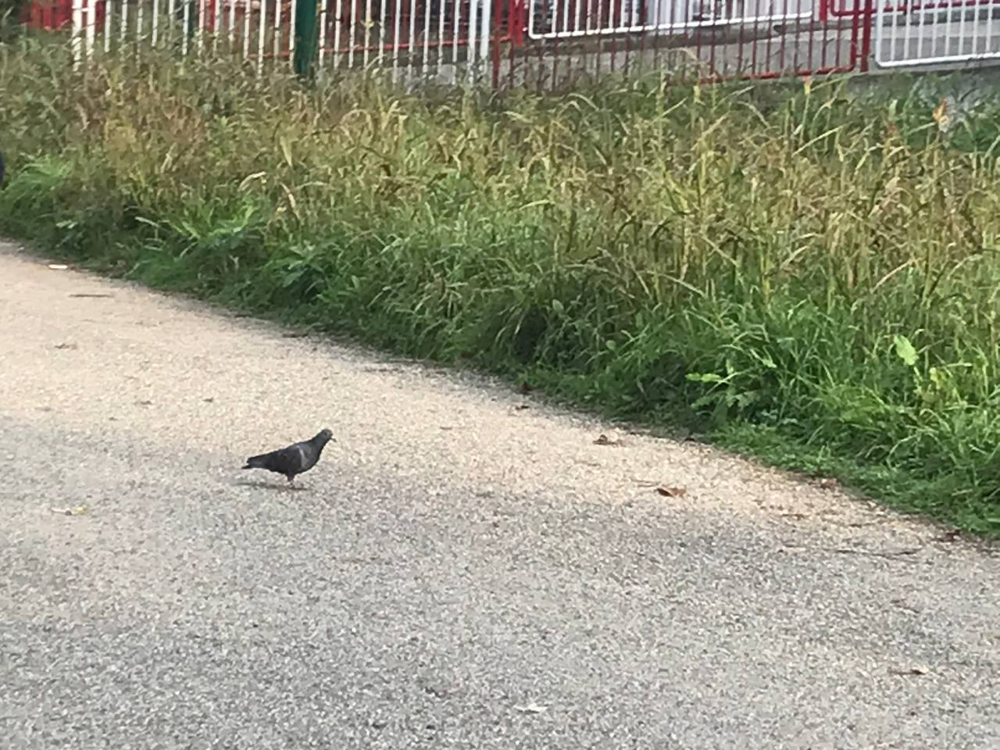

Classificazione tassonomica
Il piccione comune, Columba livia, appartiene al Regno Animalia, Phylum Chordata, Classe Aves, Ordine Columbiformes, Famiglia Columbidae, e al Genere Columba.

Descrizione
Il piccione comune (*Columba livia*), noto anche come colombo di città, è un uccello della famiglia dei Columbidi, diffuso in tutto il mondo. Ha un piumaggio grigio-bluastro con riflessi verdi e viola sul collo, e striature scure sulle ali. Adattato alla vita urbana, costruisce i nidi su edifici e strutture elevate, e si nutre di cibo facilmente reperibile nelle città.

Curiosità
- I piccioni hanno un senso dell'orientamento eccezionale, ritrovando il nido anche da grandi distanze; per secoli sono stati usati come “piccioni viaggiatori”.
- Hanno una memoria visiva sviluppata e riconoscono volti umani, distinguendo amici da estranei.
- Adattati alla vita urbana, trovano facilmente rifugi e cibo nelle città di tutto il mondo.